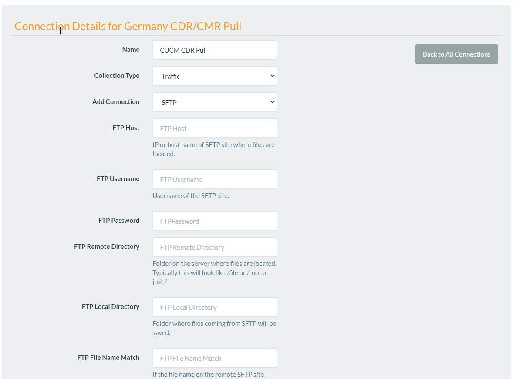

Added in version 1.0.7.2: The SFTP connection
SFTP
SFTP is currently the most used connection type. This establishes a connection to an SFTP server and downloads files to the local machine. The local machine in this document refers to the computer where UTA Service is installed.
To create a new SFTP connection follow the steps below:
Make a new Device
Open the Device and click on Connections button
This will open the list of connections that exist on this Device. If there are no connections the list will be empty. * Click on New Connection * Type in a name, for example: CUCM CDR Collection * Select the SFTP Collection Type, this can be either Traffic or Alarms. Typically when gathering SNMP this will be for Traffic Data * In Add Connection select SFTP * A new set of fields will be presented that need to be filled out.
FTP Host: The domain or ip address of the host SFTP server.
FTP Username: The username used to connect.
FTP Password: The password.
FTP Remote Directory: The directory where the CDR Data files exist. For example: RecordsSiteCDR.
FTP Local Directory: This is the local directory (Where UTA Service is running) where the files will be downloaded to.
FTP File Name Match: If the file name on the remote SFTP site contains this text it will be collected. Here are some examples: .txt or .dat or a file prefix like cdr _
After Download Action: This setting determines what happens to the files after they are downloaded. Move is the default. Delete: will remove the remote file. Move: moves the remote file into a folder called Done.
Click Save
Note
If you click Save right now the Command required to run this connection will automatically be created. To test this, press Save then go back and see the Command that was automatically created.